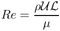
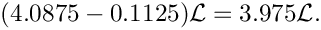
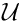
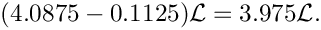
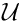

This tutorial provides another quick demonstration of how to use unstructured meshes for the solution of fluid flow problems. (The xfig / Triangle tutorial already contains 2D and 3D unstructured fluid examples.)
The specific problem considered here serves as a "warm-up problem" for the corresponding fluid-structure interaction problem in which the part of the domain boundary is replaced by an elastic object.
The problem
Here is a sketch of the problem: Flow is driven through a 2D channel that is partly obstructed by an odd-shaped obstacle. The flow is driven by the imposed Poiseuille flow at the upstream end of the channel.

Mesh generation
We use the combination of xfig, oomph-lib's conversion code fig2poly , and the unstructured mesh generator Triangle to generate the mesh, using the procedure discussed in another tutorial.
We start by drawing the outline of the fluid domain as a polyline in xfig:

(Note that we draw the domain upside-down because of the way xfig orients its coordinate axes.)
We save the figure as a *.fig file and convert it to a *.poly file using oomph-lib's conversion code fig2poly (a copy of which is located in oomph-lib's bin directory):
This creates a file called fluid.fig.poly that can be processed using Triangle. For instance, to create a quality mesh with a maximum element size of 0.03 we use
Here is a plot of the mesh, generated by showme distributed with Triangle :

The *.poly, *.ele and *.node files generated by Triangle can now be used as input to oomph-lib's TriangleMesh class.
Results
The animation shown below illustrates the flow field (streamlines and pressure contours) for Reynolds numbers of An increase in Reynolds number increases the length of the recirculation region behind the obstacle; furthermore, the sharp corner at the "leading edge" of the obstacle creates very low pressures just downstream of the corner.

Creating the mesh
In anticipation of the mesh's use in a fluid-structure interaction problem, we create the mesh by multiple inheritance from oomph-lib's TriangleMesh and the SolidMesh base class. This will allow us to use pseudo-solid node-update techniques to update the position of the fluid nodes in response to changes in the domain boundary. In the present problem, the "elasticity" of the fluid elements plays no useful role; see Comments and Exercises for instructions on how to remove the pseudo-elasticity from the problem.
The constructor calls the constructor of the underlying TriangleMesh, and, as usual, sets the Lagrangian coordinates to the current nodal positions, making the current configuration stress-free.
The TriangleMesh constructor associates each polyline in the xfig drawing with a distinct oomph-lib mesh boundary. Hence the boundary nodes are initially located on the same, single boundary. The boundary conditions can be more easily applied if the boundary is divided into three boundaries, which is the task of the function TriangleMesh::identify_boundaries().
We first allocate storage for three boundaries:
We loop over all nodes in the mesh and identify nodes on the left (inflow) boundary by their x-coordinate. We remove the node from the boundary 0 and re-allocate it to the new boundary 1:
Similarly, we identify all nodes on the right (outflow) boundary and re-assign them to boundary 2, before re-generating the various boundary lookup schemes that identify which elements are located next to the various mesh boundaries:
Problem Parameters
As usual we define the various problem parameters in a global namespace. We define the Reynolds number and prepare a pointer to a constitutive equation (for the pseudo-elastic elements).
The driver code
We specify an output directory and instantiate a constitutive equation for the pseudo-elasticity, specifying the Poisson ratio.
We create the Problem object and output the domain boundaries and the initial guess for the flow field.
Finally, we perform a straightforward parameter study by slowly increasing the Reynolds number of the flow from zero.
The Problem class
The Problem class has the usual member functions and provides explicit storage for the fluid mesh. [This is again slight overkill for the problem at hand, and is done mainly in anticipation of the "upgrade" of this driver code to the FSI problem with its multiple meshes; in the present problem we could, of course, store the pointer to the problem's one-and-only mesh directly in Problem::mesh_pt(). ]
The Problem constructor
We start by building the fluid mesh, using the files created by Triangle .
Next, we apply the boundary conditions for the fluid and the pseudo-solid equations using the function set_boundary_conditions(), which also completes the build of the elements by setting the appropriate pointers to the physical variables.
We add the fluid mesh as a single sub-mesh to the Problem and build the global mesh (see the comment in The Problem class .)
Finally, we assign the equation numbers
Setting the boundary conditions
We pin the pseudo-solid nodes along all domain boundaries, apply a no-slip condition for the fluid velocity along the solid boundary (boundary 0), pin the velocity at the inflow (boundary 1, where we will impose a Poiseuille flow profile), and impose parallel outflow at the downstream end (boundary 2). Given that the manual identification of mesh boundaries in unstructured meshes that are generated by third-party mesh generators is a relatively error-prone process, we document the boundary conditions in three separate files to allow an external sanity check; see the comments in the corresponding solid mechanics tutorial. The Comments and Exercises section of the present tutorial also has a sub-section that illustrates what can go wrong.
We complete the build of the elements by specifying the Reynolds number and the constitutive equation for the pseudo-solid equations.
Finally, we impose a Poiseuille profile at the inflow boundary (boundary 1).
Post-processing
The post-processing routine outputs the flow field.
Comments and Exercises
What is the Reynolds number?
The problem considered here is a "toy"-problem, devised to illustrate the use of unstructured meshes in fluids problems. The specific non-dimensionalisation and parameter values are therefore of secondary importance. However, since oomph-lib's implementation of the Navier-Stokes equations is based on their non-dimensional form it is important to clarify the meaning of the Reynolds number in the present problem.
Recall that the Reynolds number is defined as

where  and
and  are the fluid density and viscosity, respectively.
are the fluid density and viscosity, respectively.  is the reference length chosen for the non-dimensionalisation of the coordinates. In the present problem, where the domain boundaries were simply drawn in xfig , no specific reference length was identified, but inspection of the maximum and minimum y-coordinates of the inflow boundary in the mesh plot shows that the inflow boundary has a (dimensional) length of  In the non-dimensional version of the Navier-Stokes equations, all velocities are non-dimensionalised with a reference velocity . When we applied the inflow boundary conditions, we chose the (dimensionless) inflow profile such that its integral over the inflow boundary yields a value of 1. The velocity scale may therefore be interpreted as a (dimensional) average inflow velocity through the channel, i.e. the volume flux divided by the reference length scale.
is the reference length chosen for the non-dimensionalisation of the coordinates. In the present problem, where the domain boundaries were simply drawn in xfig , no specific reference length was identified, but inspection of the maximum and minimum y-coordinates of the inflow boundary in the mesh plot shows that the inflow boundary has a (dimensional) length of  In the non-dimensional version of the Navier-Stokes equations, all velocities are non-dimensionalised with a reference velocity . When we applied the inflow boundary conditions, we chose the (dimensionless) inflow profile such that its integral over the inflow boundary yields a value of 1. The velocity scale may therefore be interpreted as a (dimensional) average inflow velocity through the channel, i.e. the volume flux divided by the reference length scale.
Setting the boundary conditions
We wish to re-iterate the comments made in the corresponding solid mechanics tutorial that the manual identification of nodes on domain boundaries is tedious and therefore error prone. It pays off to be as a paranoid as possible, by always documenting the domain boundaries and the applied boundary conditions.
Here is the plot of boundary conditions applied in the present problem. Hollow blue markers indicate (pseudo-)solid boundary conditions (both displacements are pinned); small red markers identify nodes where the vertical fluid velocity is pinned; hollow green markers (filling the space between the blue and red lines markers) identify nodes at which the horizontal fluid velocity is pinned.

Here is another plot, obtained with the initial version of our driver code – can you spot what's wrong and can you identify the lines were added to the mesh constructor to fix the problem?

Pseudo-elasticity
As mentioned above, the elements' pseudo-elasticity plays no useful role in the present problem, as the domain boundaries remain at fixed positions and no mesh movement is required.
- As an exercise, remove all functionality related to the pseudo-elasticity by changing the element type from toPseudoSolidNodeUpdateElement<TTaylorHoodElement<2>,TPVDElement<2,3> >Adjust the code as required (e.g. remove mesh's inheritance from theTTaylorHoodElement<2>
SolidMeshbase class; remove the application of boundary conditions for the nodal positions; etc) and confirm that the results for the flow field remain unchanged.
- Alternatively, the pseudo-elasticity can can be suppressed by pinning all nodal positions, drastically reducing the number of degrees of freedom in the problem without the need to rewrite the rest of the code. (Note that this is also a useful test for the development of FSI codes.)
- However, if the pseudo-elastic capabilities are retained the fluid mesh can indeed deform as an elastic body; for example, by specifying a (solid mechanics) body force. Simply follow the steps used in the corresponding solid mechanics problem. Define the body force in the namespace
Global_Physical_Variablesand pass a (function-)pointer to it to the elements. N.B. The body force for the (pseudo-)solid equations must be specified explicitly because the Navier-Stokes equations have their own body force pointer! The compiler will complain about ambiguities in the following code:
Instead, we must be more specific by writing[...]//Set the body forceel_pt->body_force_fct_pt() = Global_Physical_Variables::gravity;[...]
indicating that it is the body force defined in the 2D solid mechanics equations that is being specified.[...]//Set the body forceel_pt->PVDEquationsBase<2>::body_force_fct_pt() =Global_Physical_Variables::gravity;[...]
Source files for this tutorial
- The source files for this tutorial are located in the directory:
demo_drivers/navier_stokes/unstructured_fluid/
- The driver code is:
demo_drivers/navier_stokes/unstructured_fluid/unstructured_two_d_fluid.cc
PDF file
A pdf version of this document is available.